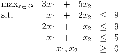
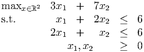
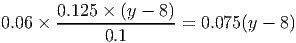
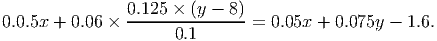
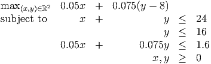

- a.
- If we have more resources than products then it is unlikely that there exists a
production program that uses up all of the resources. For example, consider the
problem:
 There is no point that satisfies all three constraints at equality. Exactly two of the three resources are used up at the points (1, 4), (4, 1). There is no feasible production plan that satisfies both of the first two constraints at equality, since this would require x1 + x2 = 6.
- b.
- Consider the problem
 The unique point that uses up all the resources is (x1,x2) = (2, 2), but the optimal solution is (x1,x2) = (0, 3).


- a.
- Let y be the number of hours per day spent on school. The expected change in the
average grade is 0.125 × (y - 8). The corresponding change in the probability of success
is
 which gives the objective function, after adding 0.05x, where x is the number of hours spent interviewing. Note that
 The overall GPA can not go higher than 4.0, so it cannot increase by more than 1, so the largest possible value for y is 16.
We also impose a constraint that the resulting probability is no larger than 1 (optional).
 - b.
-

e can increase the probability to 1 by using allocation A: x = 8, y = 16. This leaves 0 hours for eating, sleeping, etc.
- c.
- Eg: put a different upper bound on x + y. Make the tradeoffs nonlinear.